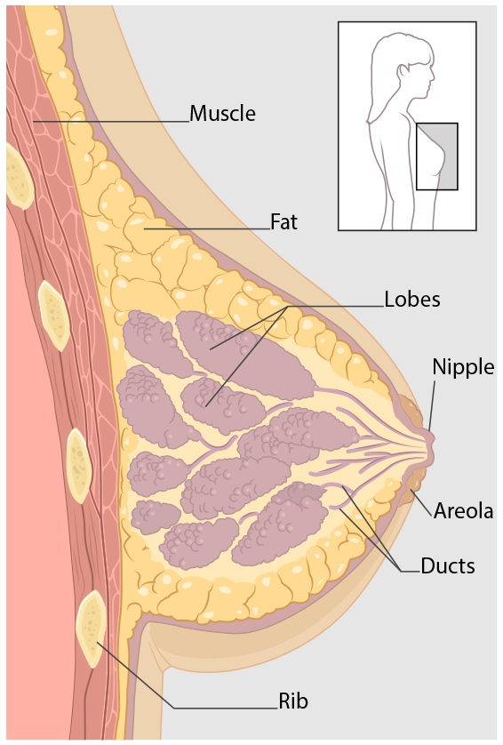

Breast Cancer
CANCER is only going to be a CHAPTER in your life not the whole STORY.
CANCER is only going to be a CHAPTER in your life not the whole STORY.
Know more about breast cancer.
Know more about breast cancer.
Different stages of breast cancer.
What are the risks for having breast cancer?
Treatment options based on type of breast cancer.
Prevention is better than cure.
Breast cancer is a disease in which cells in the breast grow out of control.
There are different kinds of breast cancer.
The kind of breast cancer depends on which cells in the breast turn into cancer.
Breast cancer can begin in different parts of the breast.
A breast is made up of three main parts: lobules, ducts, and connective tissue.
The lobules are the glands that produce milk. The ducts are tubes that carry milk to the nipple.
The connective tissue (which consists of fibrous and fatty tissue) surrounds and holds everything together.
Most breast cancers begin in the ducts or lobules.

Breast cancer can spread outside the breast through blood vessels and lymph vessels.
When breast cancer spreads to other parts of the body, it is said to have metastasized.
Also known as invasive breast cancer, the tumor in this stage measures between 2 cm to 5 cm, or the cancer has spread to the lymph nodes under the arm on the same side as the breast cancer. Stage II breast cancer indicates a slightly more advanced form of the disease. At this stage, the cancer cells have spread beyond the original location and into the surrounding breast tissue, and the tumor is larger than in stage I disease. However, stage II means the cancer has not spread to a distant part of the body.
At stage II, a tumor may be detected during a breast self-exam as a hard lump within the breast. Breast self-exams and routine screening are always important and can often lead to early diagnosis, when the cancer is most treatable.
Stage II breast cancer is divided into two categories:
Stage IIA (Stage 2A): One of the following is true:
Also known as locally advanced breast cancer, the tumor in this stage of breast cancer is more than 2
inches in diameter across and the cancer is extensive in the underarm lymph nodes or has spread to other
lymph nodes or tissues near the breast.
Stage III breast cancer is a more advanced form of invasive breast cancer.
At this stage, the cancer cells have usually not spread to more distant sites in the body, but they are
present in several axillary (underarm) lymph nodes. The tumor may also be quite large at this stage, possibly
extending to the chest wall or the skin of the breast.
Stage III breast cancer is divided into three categories:
Stage IIIA (Stage 3A): One of the following is true:
No tumor is found in the breast, but cancer is present in axillary lymph nodes that are attached to either other or other structures, or cancer may be found in the lymph nodes near the breast bone, or
The tumor is 2 cm or smaller. Cancer has spread to axillary lymph nodes that are attached to each other or other structures, or cancer may have spread to lymph nodes near the breastbone, or
The tumor is 2 cm to 4 cm in size. Cancer has spread to axillary lymph nodes that are attached to each other or to other structures, or cancer may have spread to lymph nodes near the breast bone, or
The tumor is larger than 5 cm. Cancer has spread to axillary lymph nodes that may be attached to each other or to other structures, or cancer may have spread to lymph nodes near the breastbone.
Stage IIIB (Stage 3B): The tumor may be any size, and the cancer:
Has spread to the chest wall and/or skin of the breast, and
May have spread to axillary lymph nodes that may be attached to each other or to other structures, or cancer may have spread to lymph nodes near the breastbone.
Cancer that has spread to the skin of the breast is inflammatory breast cancer.
Stage IIIC (Stage 3C):
There may be no sign of cancer in the breast or the tumor may be any size and may have spread to the chest wall and/or skin of the breast.
Cancer cells are present in lymph nodes above or below the collarbone.
Cancer cells may have spread to axillary lymph nodes or lymph nodes near the breastbone.
Cancer that has spread to the skin of the breast is inflammatory breast cancer.
Stage IIIC breast cancer may be operable or inoperable:
Operable stage IIIC: The cancer is found in 10 or more axillary lymph nodes, or is in lymph nodes below the collarbone, or is in axillary lymph nodes and lymph nodes near the breastbone.
Inoperable stage IIIC: The cancer has spread to the lymph nodes above the collarbone.
The survival rate for stage IIIA breast cancer may be slightly higher than for stage 3B, and the survival rate for stage IIIB may be slightly higher than for stage IIIC. However, all women diagnosed with stage III breast cancer have several promising treatment options.
At stage III, TNM designations help describe the extent of the disease. Higher numbers indicate more extensive disease. Most commonly, stage III breast cancer is described as:
Also known as metastatic breast cancer, the cancer in this stage has spread beyond the breast, underarm and internal mammary lymph nodes to other parts of the body near to or distant from the breast. The cancer has spread elsewhere in the body. The affected areas may include the bones, brain, lungs or liver and more than one part of the body may be involved.
At stage IV, TNM designations help describe the extent of the disease. Higher numbers indicate more extensive disease. Most commonly, stage IV breast cancer is described as:
Studies have shown that your risk for breast cancer is due to a combination of factors. The main factors that influence your risk include being a woman and getting older. Most breast cancers are found in women who are 50 years old or older.
Some women will get breast cancer even without any other risk factors that they know of. Having a risk factor does not mean you will get the disease, and not all risk factors have the same effect. Most women have some risk factors, but most women do not get breast cancer. If you have breast cancer risk factors, talk with your doctor about ways you can lower your risk and about screening for breast cancer.
Some treatments remove or destroy the disease within the breast and nearby tissues, such as lymph nodes. These include:
It’s easy to tune out because it gets said so often, but maintaining a healthy weight is an important goal for everyone. Being overweight can increase the risk of many different cancers, including breast cancer, especially after menopause.
Exercise is as close to a silver bullet for good health as there is, and women who are physically active for at least 30 minutes a day have a lower risk of breast cancer. Regular exercise is also one of the best ways to help keep weight in check.
A healthy diet can help lower the risk of breast cancer. Try to eat a lot of fruits and vegetables and keep alcohol at moderate levels or lower (a drink a day or under). While moderate drinking can be good for the heart in older adults, even low levels of intake can increase the risk of breast cancer. If you don’t drink, don’t feel you need to start. If you drink moderately, there’s likely no reason to stop. But, if you drink more, you should cut down or quit.
Smokers and non-smokers alike know how unhealthy smoking is. On top of lowering quality of life and increasing the risk of heart disease, stroke, and at least 15 cancers – including breast cancer – it also causes smelly breath, bad teeth, and wrinkles. Now that’s motivation to stay smoke-free or work to get smoke-free.
Some cancer risk factors, such as genetics and environment, are out of your control, but research suggest that about 70% of your lifetime risk of cancer is within your power to change, including your diet. Avoiding cigarettes, limiting alcohol, reaching a healthy weight, and getting regular exercise are all great steps for preventing cancer. Adopting a healthy diet can also play a vital role.
Research shows that garlic is a cancer-fighting food. Several large studies have found that those who eat more garlic are less likely to develop various kinds of cancer, especially in digestive organs such as the esophagus, stomach, and colon. Ingredients in the pungent bulbs may keep cancer-causing substances in your body from working, or they may keep cancer cells from multiplying. Experts don’t know how much you need to eat to prevent cancer, but a clove a day may be helpful.
As a tasty treat and cancer-fighting food, berries are hard to beat. Berries contain particularly powerful antioxidants, meaning they can halt a naturally occurring process in the body that creates free radicals that can damage your cells. Compounds in berries may also help keep cancers from growing or spreading. So, as part of your anti-cancer diet, pick up a handful of blueberries, blackberries, strawberries, or whichever are your favorite from this large family of healing fruits.
Some research has found that tomatoes may help protect men from prostate cancer. The juicy red fruit can help guard the DNA in your cells from damage that can lead to cancer. Tomatoes contain a particularly high concentration of an effective antioxidant called lycopene. Your body may absorb lycopene better from processed tomato foods such as sauce, which means that whole-wheat pasta with marinara sauce could be a delicious way to get your dose of cancer-fighting foods.
Leafy green vegetables like spinach and lettuce are good sources of the antioxidants beta-carotene and lutein. You’ll also find these nutrients in vegetables that are more traditionally eaten cooked, like collard greens, mustard greens, and kale. According to the American Institute for Cancer Research, some lab studies have found that chemicals in these cancer-fighting foods may limit the growth of some kinds of cancer cells.
Certain fruits and vegetables and other plant foods get plenty of recognition for being good sources of antioxidants, but beans often are unfairly left out of the picture. Some beans, particularly pinto and red kidney beans, are outstanding sources of antioxidants and should be included in your anti-cancer diet. Beans also contain fiber, which may also help reduce your risk of cancer, according to the American Cancer Society.
The skin of red grapes is a particularly rich source of an antioxidant called resveratrol. Grape juice and red wine also contain this antioxidant. According to the National Cancer Institute, resveratrol may be useful in keeping cancer from beginning or spreading. Lab studies have found that it limits the growth of many kinds of cancer cells.
A breast self-examination (BSE) is a technique which allows an individual to examine his/her breast tissue for any physical or visual changes. It is often used as an early detection method for breast cancer.
Check the OUTER HALF of your right breast. Lie down and roll on to your left side to examine your right breast. Place your right hand, palm up on your forehead. Your breast should lie as flat on your chest as possible. It may be easier and more comfortable if you put a pillow behind your shoulder or back.
Using the flat pads of your three middle fingers—not the tips—move the pads of your fingers in little circles, about the size of a dime. For each little circle, change the amount of pressure so you can feel ALL levels of your breast tissue. Make each circle three times—once light, once medium, and once deep—before you move on to the next area.
Start the circles in your armpit and move down to just below the bra line. Then slide your fingers over—just the width of one finger and move up again. Don’t lift your fingers from your breast as you move them to make sure you feel the entire area. Continue this up-and-down vertical strip pattern—from your collarbone to just below your bra line—until you reach the nipple.
Check the INNER HALF of your right breast.
When you reach the nipple, remove pillow and roll on to your back, remove your hand from your forehead and place this arm at a right angle (see drawing).
Carefully check the nipple area using the same circular pressures as before, without squeezing. Then examine the remaining breast tissue using
the up-and-down vertical strip pattern, until you reach the middle of your chest. Place your non-palpating hand down at your side, make a row of circles above and below your collarbone,
working from your shoulder to your mid-line.
-Roll on to your right side and repeat these steps on your left breast, using your right hand.
Stand in front of a mirror and look closely at your breasts in the following three positions, viewing from the right and left as well as facing forward. Check for changes in the following:
Arms at your sides.
Arms raised above your head bending forward.
Place hands on your hips and hunch over.
Do not ignore these symptoms.
Knowing how your breasts normally look and feel is an important part of breast health.
Finding breast cancer as early as possible gives you a better chance of
successful treatment. But knowing what to look for does not take the place of
having regular mammograms and other screening tests. Screening tests can help find breast
cancer in its early stages, before any symptoms appear.
The most common symptom of
breast cancer is a new lump or mass. A painless, hard mass that has irregular edges is more
likely to be cancer, but breast cancers can be tender, soft, or rounded. They can even be
painful. For this reason, it is important to have any new breast mass, lump, or breast change
checked by a health care professional experienced in diagnosing breast diseases.
Other possible symptoms of breast cancer include:
| Session Time: |
|
1 minute | Break Time: |
|
1 minute |
Click on the right top corner to workout on the timer.
Strechs and easy movements that you can do at home.
Simple exercises that you can do at home.
Doctors instruction for a good exercise to cancer servivors
Five was to prevent breast cancer through workouts.
Easy workout for women.
Benefits of physiotherapy for breast cancer recovery.
Home workout and streches.
Doctor instruction for a good workout.
BMI is a scale that can help determine if your weight is healthy in relation to your height. Your BMI is calculated by dividing your weight by the square of you height. To find your BMI, simply use the chart below. Find your weight in pounds along the bottom and follow the chart to the spot where it meets your height in feet and inches. That number is your BMI. For women and men, the following BMI ranges indicate your weight status:
If you have a higher BMI, you’re more likely to have health problems like heart disease, stroke, diabetes, gallbladder disease, sleep apnea and osteoarthritis. Obesity also has been linked to an increased risk of several cancers, including esophageal, pancreatic, colorectal, breast, endometrial and kidney cancer.
“It’s important to remember that BMI is just one factor in determining your overall health”. BMI should be considered along with other factors like blood lipid levels and blood pressure to determine if you’re in good health. A high BMI doesn’t always mean you’re overweight. In fact, those with a very muscular build often have a high BMI, but not a high percentage of body fat.
Because BMI is just one indicator of your health, it’s best to talk to your doctor if you have a BMI that is considered overweight or underweight. Meeting with a professional can help you determine if you have underlying health problems. For example, sudden weight gain may be associated with thyroid problems. Sudden changes in weight, in some cases, can be a cancer symptom. “Don’t just jump into a new diet. There are a lot of factors that go into weight,” Hedberg says. “Not just food.” A healthy lifestyle includes goals that include a healthy body weight, physical fitness and stress control.
Your height in centimeters:
Your weight in kilograms:
Your Body Mass Index is:
Breastcancer.org is a nonprofit organization founded in 2000 by breast oncologist Marisa C. Weiss, M.D. and born out of her conviction that people with breast cancer need more information and support than a doctor's visit can provide.
We are the leading patient-focused resource for breast health and breast cancer information and support. We engage, educate, and empower people with our expert information and dynamic peer support community to help them make the best decisions for their lives.
Since 2000, we have reached 134 million people worldwide. Breastcancer.org receives more than 20 million visits each year, and we host and manage the world’s largest online breast cancer peer community, with over 219,000 registered members.
Our mission is to help women, men, and their loved ones make sense of the complex medical and personal information about breast health and breast cancer, so they can make the best decisions for their lives.